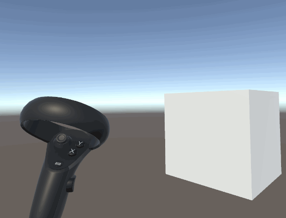

Unity SteamVR Plugin 配置教程
使用SteamVR Unity Plugin制作简单VR射击游戏
2019/12/4 by DKZ
SteamVR Unity Plugin是由Valve维护的Unity插件，使用它开发人员可以使用统一的API来控制市面上流行的VR设备。通过它开发人员可以方便的加载VR控制器的模型，获取这些控制器的输入以及估计玩家使用控制器时的手型。
SteamVR Unity Plugin提供的功能较多，网上中文教程较少，避免大家踩坑，针对VR射击游戏的应用场景，做一个基础的配置教程。本教程针对VR游戏开发中常用的功能做简单的介绍，内容涵盖头显及相机的设置，SteamVR Input Actions的设置以及如何在脚本中获取控制器按键摇杆输入和控制器在游戏中的位置坐标信息。
SteamVR Plugin 下载和导入

首先需要先配置好VR设备，我使用的是Oculus Rift S进行测试。然后需要打开steam平台，在平台上下载SteamVR程序。
本教程所使用的Unity版本是2019.2.2f1

在Assets Store找到SteamVR Plugin点击Download->Import 本教程使用的版本是v2.5.0(sdk1.8.19)

在导入中点击Import
头显和相机设置
导入SteamVR插件后就可以在Project窗口assets中找到SteamVR插件。在Hierarchy窗口中删除默认的Main Camera，新建一个名为Character的空对象。

在SteamVR插件的Prefabs中找到[CameraRig]对象，将它拖到新创建的Character对象中。

SteamVR Input窗口可以设置Actions，下文会详细说明。这里直接使用默认设置，点击Save and generate。
这时运行游戏，在VR头显中就可以看到场景和控制器了。
控制器动作设置及使用
Input System 的核心概念是动作（Action），我们想要获取控制器的输入首先要创建对应的动作，并将输入和动作关联起来。
首先要创建动作

- 点击+号新建一个动作集（Action Sets）
- 将动作集命名为‘vr’
- 新建一个动作输入（Action In）
- 命名为‘wasd’
- 选择类型为vector2
接着将控制器输入绑定在创建的动作上
点击Open binding UI

在打开的窗口上选择我们的项目

进入设置页面
- 选择新建的动作集vr
- 点击左摇杆
- 点击位置选项，在弹出框中选中动作wasd，类型为Vector2
- 点击保存
这样就将控制器输入和动作对应上了。
最后尝试在脚本中获取摇杆动作来控制角色移动

在Character对象上新建一个Steam VR Activate Action Set On Load，在Action Set属性上选择动作集vr
再新建一个Character Controller组件
新建一个脚本VRCtrl内容如下
using System.Collections;
using System.Collections.Generic;
using UnityEngine;
using Valve.VR.InteractionSystem;//引用steamVR
namespace Valve.VR.InteractionSystem.Sample{//命名空间
public class VRCtrl : MonoBehaviour
{
CharacterController m_CharacterController;
// Start is called before the first frame update
void Start()
{
m_CharacterController = GetComponent<CharacterController>();//Character Controller组件
}
// Update is called once per frame
void Update()
{
Vector2 mv = SteamVR_Actions.vr.wasd.GetAxis(SteamVR_Input_Sources.Any);//获取摇杆动作
//以下为移动Character
Vector3 move = Vector3.zero;
move = new Vector3(mv.x, 0, mv.y);
if (move.sqrMagnitude > 1.0f){
move.Normalize();
}
m_CharacterController.Move(transform.TransformDirection(move*Time.deltaTime));
}
}
}
大功告成，这时运行游戏就可以在游戏中使用摇杆来控制角色移动了

其他类型动作设置
刚才已经设置了摇杆的动作来控制角色移动，我们还可以设置其他类型的动作。
SteamVR 将动作抽象为以下6种类型，简介如下：
- Boolean类型的动作代表只有两种状态的动作——True或False，比如抓取（Grab）动作，只有抓取或未抓取两种状态，不存在中间状态。在Unity中对应类为SteamVRActionBoolean。
- Single类型的动作能够返回0~1之间的数值，比如 Trigger 键按下到松开的过程。在Unity中对应类为SteamVRActionSingle。(改为Vector1)
- Vector2类型动作能够返回二维数，比如Touchpad上的触摸或手柄摇杆。使用这样的数值能够控制物体在四个方向的运动，典型的应用时使用Touchpad控制无人机或小车的运动。在Unity中对应类为SteamVRActionVector2。
- Vector3类型的动作能够返回三维数值，在Unity中对应类为SteamVRActionVector3。
- Pose类型的动作表示三维空间中的位置和旋转，一般用于跟踪VR控制器。在Unity中对应类为SteamVRActionPose。
- Skeleton类型的动作能够获取用户在持握手柄控制器时的手指关节数据，通过返回数据，结合手部渲染模型，能够更加真实的呈现手部在虚拟世界的姿态，虽然不及像LeapMotion等设备获取手指输入那样精确，但是足以获得良好的沉浸感。在Unity中对应类为SteamVRActionSkeleton。
具体的设置方法都大同小异本文不再赘述，在脚本中使用的方法也大体相同，举例几个常用的附上代码。
摇杆控制转向
新建snapleft和snapright两个Boolean类型动作，绑定右摇杆，注意要取消镜像。并在VRCtrl脚本Update方法增加。
bool snapleft=SteamVR_Actions.vr.snapLeft.GetState(SteamVR_Input_Sources.Any);
if(snapleft){
this.transform.Rotate(0,-1.0f,0);
}
bool snapright=SteamVR_Actions.vr.snapRight.GetState(SteamVR_Input_Sources.Any);
if(snapright){
this.transform.Rotate(0,1.0f,0);
}
武器绑定
新建pose和trigger动作，绑定右摇杆，新建一个枪的对象，加入脚本。
using System.Collections;
using System.Collections.Generic;
using UnityEngine;
using Valve.VR.InteractionSystem;
namespace Valve.VR.InteractionSystem.Sample{
public class VRgun : MonoBehaviour
{
// Start is called before the first frame update
void Start()
{
}
// Update is called once per frame
void Update()
{
Vector3 pose_position=SteamVR_Actions.vr.pose.localPosition;//获取控制器位置
transform.localPosition=pose_position;//设置枪位置
Quaternion pose_rotation=SteamVR_Actions.vr.pose.localRotation;//获取控制器角度
transform.localRotation=pose_rotation;//设置枪角度
bool trigger=SteamVR_Actions.vr.trigger.GetState(SteamVR_Input_Sources.Any);//获取扳机状态
if(trigger){
//开枪的逻辑
}
}
}
}

这样一个简单的VR射击游戏就做好了